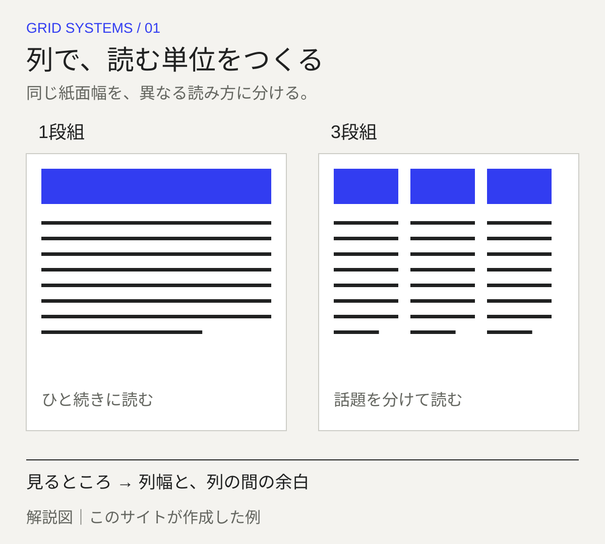
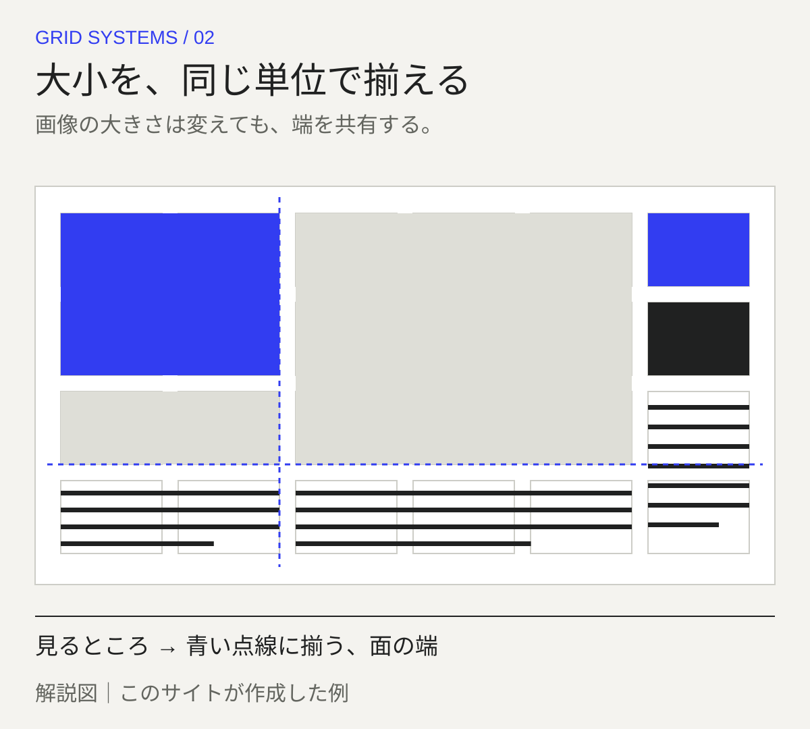
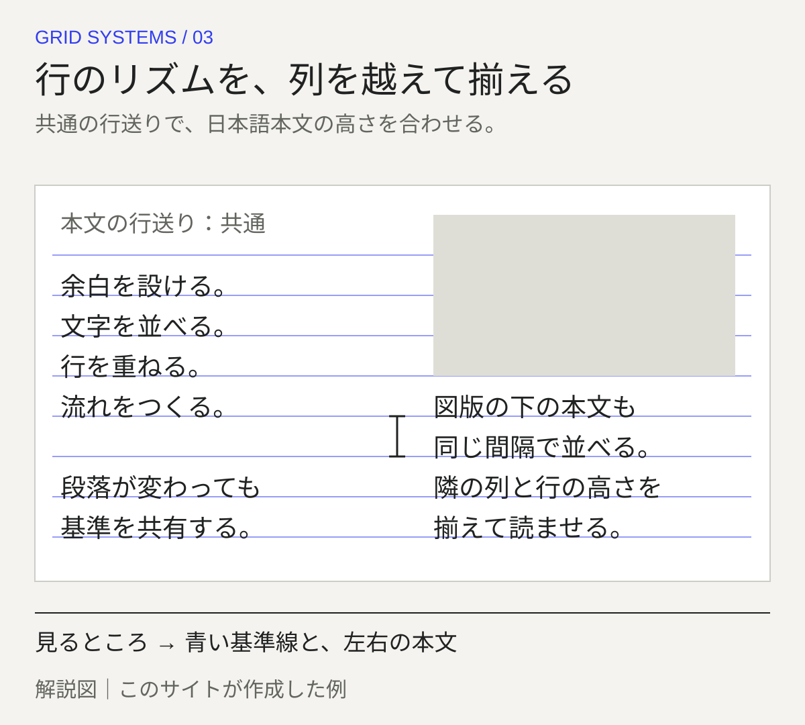
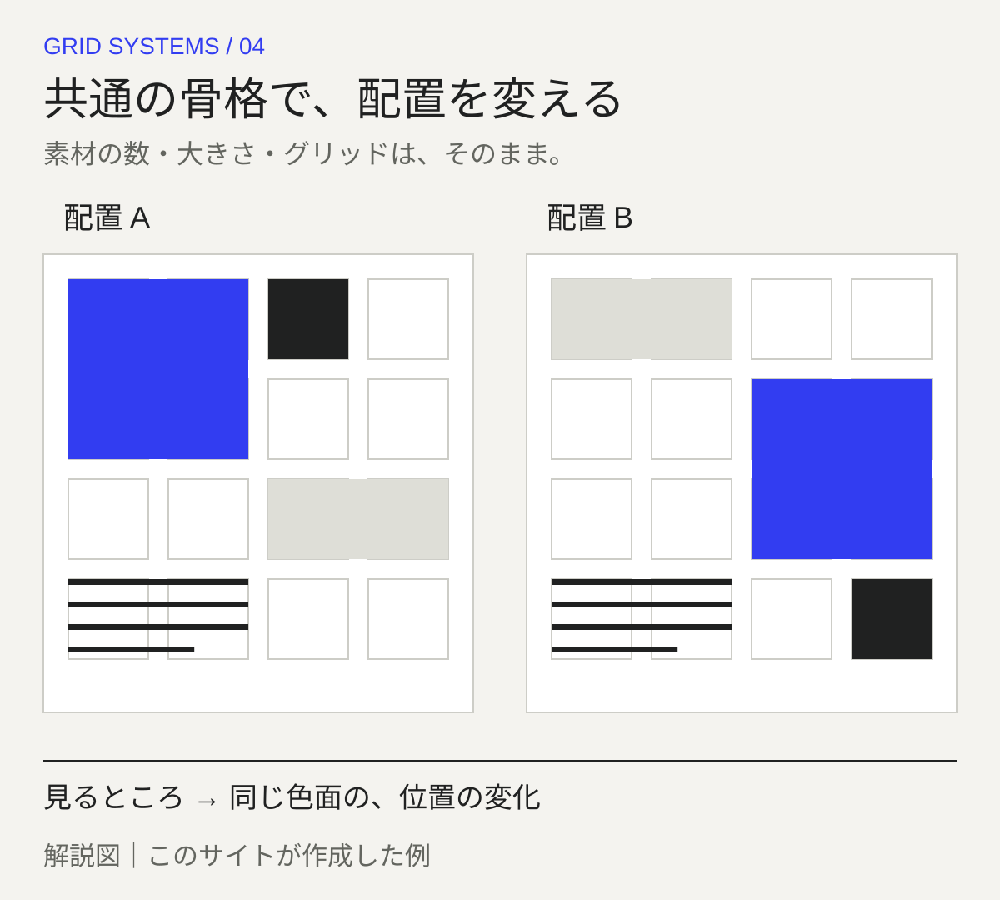

技法解説・自作解説図4点 / 歴史的な実作品画像は未掲載 · 2026-11-01
配置を組織する方法
グリッド・システム
Grid systems
- 年代
- 特定の発祥年を置かない／参照書籍：1964・1981年
- 地域
- 複数の制作領域で用いる方法（単一地域の運動として扱わない）
見えない線で、文字や写真をそろえる。
本や画面の文字がばらばらに並んでいたら、読む場所に迷いそうです。
グリッドは、文字や写真を置く位置を決めるための、線の仕組みです。
線に合わせると、ページが変わっても位置をそろえられます。
同じ線を使いながら、一部の写真だけ大きく置くこともできます。
- 紙面を見るなら、文字や写真の端がそろう場所はどこでしょう。
- 同じ幅の列が、いくつ並んでいるように見えますか。
METHOD / 配置を組織する方法
仕組みを見る：オリジナル解説図
以下の4点は、このサイトが作成した解説用の例です。歴史的作品の複製・復元ではありません。
列で、読む単位をつくる
列は配置の縦方向の基準。要素は一列に収めることも、複数列をまたぐこともできます。段間と外側の余白は別々に考えます。

解説図｜このサイトが作成した例。列幅と段間を揃えると、読む単位と順序が見えやすくなる。大小を、同じ単位で揃える
列を横方向にも分割すると、配置の単位となるマスができます。複数の単位をまとめて画像や文章を置いても、端の位置の基準を共有できます。

解説図｜このサイトが作成した例。色面は画像の代わり。複数のマスを使う配置でも、端の基準は共有できる。行のリズムを、列を越えて揃える
横組み本文の行の基準を揃える仕組みです。列や図版を越えて文字の行位置を合わせる際は、行送りと開始位置を調整します。

解説図｜このサイトが作成した例。横組み本文のベースラインを可視化した例。実際の組版では字面・行送り・図版後の開始位置を調整する。共通の骨格で、配置を変える
基準を共有しても、配置をすべて同じにする必要はありません。列をまたぐ幅や要素の位置を変え、共通性と変化を比較します。

解説図｜このサイトが作成した例。グリッドは固定配置の命令ではない。同じ基準の中で位置を変えると、統一感と変化を両立できる。自作解説図4点。歴史的代表作品画像・生成イメージの点数には含めません。小さな文字は原寸表示で確認できます。
解説図の制作台帳02 — READING & PRACTICE 歴史運動ではなく、配置の方法として読む。
方法を確かめる、
書籍と公式ガイド。
以下は参考書籍と現代の公式ガイドです。自作例の説明と、歴史上の図版の実見・転載を区別します。
方法を学ぶための参考資料です。特定の運動を代表する歴史作品の画像セットではありません。
01Grid systems in graphic design
文字や画像を、どこへ置く？
位置を決める線の使い方をまとめた本です。
紙の上だけでなく、立体での使い方も扱っています。
作品の所蔵元・解説ページで見る ↗原作品：参考文献・公式ガイドへのリンク。図版の転載許諾とは別。 / 複製：歴史作品・書籍ページの画像は未掲載
商用利用：参考図版の商用再利用条件は未確認 / 画像採用：未取得・自作解説図で方法を説明
作品の記録と、詳しい説明
実務書
Josef Müller-Brockmann / 1981
平面や立体の中で、物や情報の配置を組み立てる方法を見ます。
示した年は本の出版年で、グリッドが発明された年ではありません。特定の図版は転載していません。
Designing Programmes
形を決める前に、決まりを考える。
一つの形だけをつくるのではなく、いろいろな形をつくれる決まりを考える本です。
グリッドだけの本ではありません。
作品の所蔵元・解説ページで見る ↗原作品：参考文献・公式ガイドへのリンク。図版の転載許諾とは別。 / 複製：歴史作品・書籍ページの画像は未掲載
商用利用：参考図版の商用再利用条件は未確認 / 画像採用：未取得・自作解説図で方法を説明
作品の記録と、詳しい説明
関連する設計方法論
Karl Gerstner / 初版1964
一つの形を決めるだけでなく、設計の規則そのものを考える参考文献です。
グリッドだけを扱う本ではありません。現在の復刻版と最初の刊行を区別します。特定のグリッドの図を確認したとはしていません。
2x Grid
場所が変わっても、そろえられるように。
文字や写真のまわりに、どれくらい空きを残すかを決めます。
決まった長さを使うと、紙や画面が変わってもそろえられます。
作品の所蔵元・解説ページで見る ↗原作品：参考文献・公式ガイドへのリンク。図版の転載許諾とは別。 / 複製：歴史作品・書籍ページの画像は未掲載
商用利用：参考図版の商用再利用条件は未確認 / 画像採用：未取得・自作解説図で方法を説明
作品の記録と、詳しい説明
現代のデザインシステム
IBM Design Language / 現在の公式ガイド（2026年確認）
余白、段と段の間隔、基準となる単位を見ます。それらを使い、異なる媒体でも配置を組み立てる方法に注目します。
IBM固有の単位や数値を、どこでも通用する唯一の正解とは考えません。
Baseline grid
行が変わっても、文字をそろえる。
文字を同じ高さにそろえる線を使います。
ページや列が変わっても、本文の行をそろえられます。
作品の所蔵元・解説ページで見る ↗原作品：参考文献・公式ガイドへのリンク。図版の転載許諾とは別。 / 複製：歴史作品・書籍ページの画像は未掲載
商用利用：参考図版の商用再利用条件は未確認 / 画像採用：未取得・自作解説図で方法を説明
作品の記録と、詳しい説明
現代の組版実装
Adobe InDesign / 現在の公式ガイド（2026年確認）
本文をそろえる基準線と、行から次の行までの間隔の関係を見ます。列やページが変わってもそろえる仕組みに注目です。
ソフトウェアに取り入れられた例です。この方法がどこで始まったかを示す歴史資料ではありません。
もう少し知る：時代や、つくり方の話
何を組織する
方法なのか。
文字や写真の位置をそろえると、なぜ読みやすくなるのでしょうか。グリッドは、位置と間隔の基準を決めて、紙面や画面の情報を整理する方法です。列に沿って並べるだけでなく、複数の列をまたいで置くこともできます。同じ骨組みを使いながら、変化も作れるのです。
ここで扱うのは、一つの運動の歴史ではなく、配置の方法です。ヨゼフ・ミューラー＝ブロックマン（Josef Müller-Brockmann）の『Grid systems in graphic design』（1981）は、平面と立体でのグリッドの使い方をまとめた実務書です。
カール・ゲルストナー（Karl Gerstner）の『Designing Programmes』（初版1964）は、グリッドに限らず、共通のルールに基づく設計の方法を考える関連書です。どちらの出版年も、グリッドそのものが発明された年ではありません。
01 — LOOKING CLOSELY 識別は、個別作品との照合から。
以下は観察のための問いです。すべての作品に共通する固定ルールや、未取得画像の実見結果ではありません。
COLOR色と、使った材料
グリッドは、使う色を決める方法ではありません。掲載した図の青色は、仕組みを説明するための色です。
TYPE文字をどう見せる？
段幅（だんはば：文章を組む列の幅）、行送り（ぎょうおくり：行から次の行までの間隔）、ベースライン（文字をそろえる基準線）の関係を見ます。
FORMどんな形で、どうつくる？
縦の列、横の行、それらで区切る単位であるモジュールを区別します。段間（だんかん：列と列の間）と、外側などの余白にも注目します。
COMPOSITIONどこに、どう置く？
文字や画像の端がそろう場所、複数の列にまたがる幅を見つけます。同じ配置の繰り返しと、そこに加えた変化を観察しましょう。
COMPARE
似ているところ、違うところ。
スイス・スタイル（Swiss Style）と同じ意味でも、弁当箱の仕切りのようにカードを並べるBento型の配置の別名でもありません。完成した画面に後から引いた線は、分析のために考えた仮の線です。制作者が実際にその設計図を使った証拠にはなりません。
項目を横に並べる ↗READ TODAY
いま使われている仕組みと比べる
現在の実務の例には、IBM Design Languageの「2x Grid」や、Adobe InDesignのベースライングリッドがあります。ただし、歴史上の一冊から、現代のすべてのUI（画面の表示や操作の仕組み）へ直接受け継がれたとは断定しません。